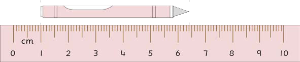

Exercise 2
1.
Which measurement unit among cm, m and km is appropriate for measuring the following?
(a) your height
(b) distance from your class to the school toilet
(c) distance from your school to home
(d) length of a piece of chalk
2.
Amina measured the length of a chalkboard using a ruler.John measured the length of the same chalkboard using his handspan.Who obtained the most correct measurement?Give reasons for your answer.
3.
The distance from one school to a nearby dispensary is 800 m.The distance from the same school to a nearby market is one kilometre.Which one is far from the school between the dispensary and the market?
4.
What is the length of the pencil in the following picture.
